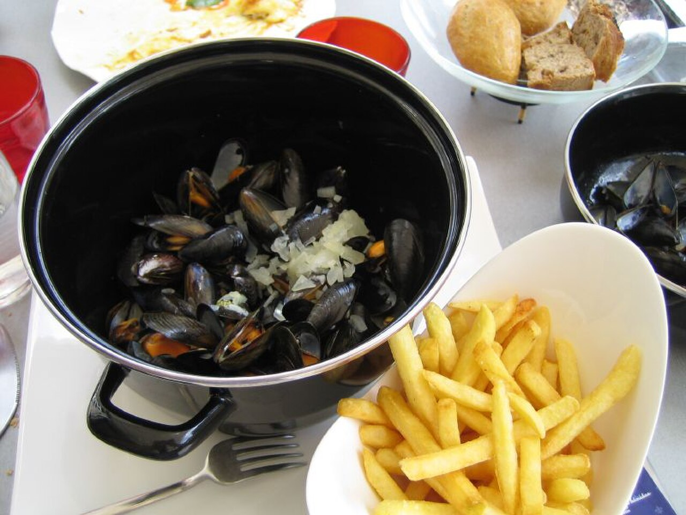

CityLoop Quest Dubrovnik


La journée gourmande commence tôt sur la place Gundulić et au marché de Gruž. Fruits, légumes, miel, lavande, fromages et produits des Konavle y arrivent avant la chaleur. À Gruž, les poissons suivent les retours de pêche et les conditions de mer ; la présence d’une espèce sur l’étal raconte parfois mieux la saison qu’un calendrier.
Le café est une institution sociale. On ne l’avale pas uniquement pour repartir : il sert à prendre des nouvelles, observer la rue et prolonger une conversation. Sur Stradun, les terrasses offrent un spectacle exceptionnel mais des prix élevés. Dans les quartiers de Gruž, Lapad ou Montovjerna, l’habitude locale apparaît plus nettement, avec des clients réguliers et des rencontres moins pressées.
Une konoba désigne à l’origine une cave ou un espace de stockage, devenu par extension une auberge de cuisine simple. Le mot ne garantit pas l’authenticité ; il décrit plutôt une ambiance et un répertoire de plats. Les bonnes adresses annoncent volontiers l’origine du poisson, la viande cuite sous peka ou les légumes du jour au lieu d’aligner un menu interminable.

Les huîtres se dégustent idéalement près de Mali Ston, où l’on voit les parcs dans la baie. À Dubrovnik, elles arrivent rapidement mais perdent le paysage qui les explique. Le vin blanc Pošip de Korčula ou de Pelješac accompagne souvent les produits de la mer. Dans les Konavle, la malvasija dubrovačka, cépage historique distinct de plusieurs autres malvoisies méditerranéennes, produit des vins aromatiques recherchés.

Les heures de repas se décalent en été. Un déjeuner léger évite la marche sous la chaleur, puis le dîner s’étire après le coucher du soleil. Les portions de poissons sont parfois vendues au poids : demander le poids et le prix avant la cuisson évite les surprises. Pour les crustacés, la fraîcheur et la préparation comptent davantage qu’une sauce compliquée.
Les cadeaux alimentaires les plus liés à la région sont les écorces d’orange confites, les amandes sucrées, le sel de Ston, certaines huiles d’olive et les vins locaux. Un marché reste toutefois un lieu de travail : goûter avec permission, ne pas bloquer les passages et accepter qu’un producteur ait épuisé son stock fait partie d’une relation respectueuse avec cette culture gourmande.